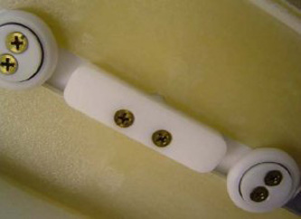
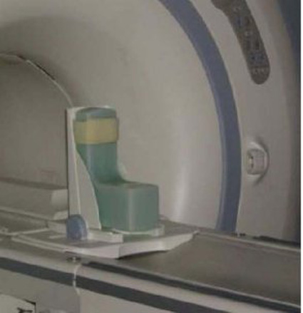
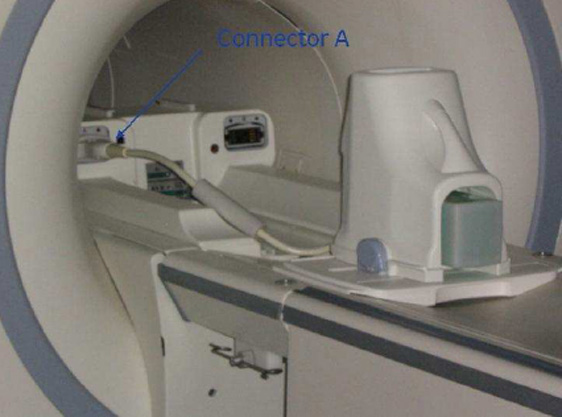
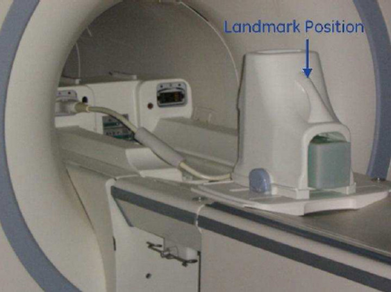
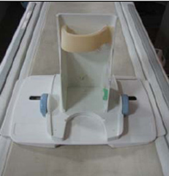
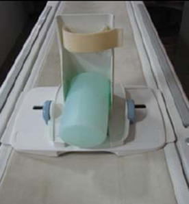
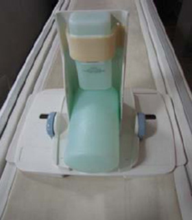
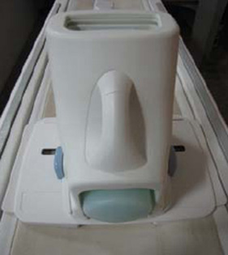
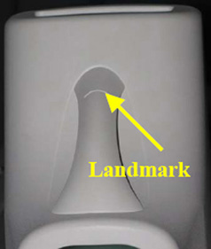

Operating Documentation
Direction 5440000, Rev# 5
Signa HDxt Service Methods
Module Version 1.0, Version Date 2/25/10
Operating Documentation |
| Required Persons | Preliminary Reqs | Procedure | Finalization |
|---|---|---|---|
| 1 | Not Applicable | 15 mins | Not Applicable |
| NOTE: | Coils do not ship with phantoms. Phantoms come in a unified phantom set with the MR system. |
| Item | Qty | Effectivity | Part# | Manufacturer | |
|---|---|---|---|---|---|
| HD 8-Channel Foot/Ankle Legacy Phantom Assembly | 1 | Legacy Phantom Set | 5273235-5 | - | |
| Small, Cylindrical Unified Phantom | 1 | Unified Phantom Set | 5342680 | - | |
| Cubical Unified Phantom | 1 | Unified Phantom Set | 5342681 | - | |
| Item | Qty | Effectivity | Part# | Manufacturer | |
|---|---|---|---|---|---|
| See 3.0T HD 8-Channel Foot/Ankle Coil FRUs | - | - | - | - | |
| ||||
| All RF coil-related tests must be run on a system that is well calibrated and passes all system tests. The system should have passed Install In Spec (IIS), especially white pixel, correlated noise, and Multi-Coil-Receive (MCR) tool. | ||||
| Condition | Reference | Effectivity |
|---|---|---|
This coil configuration name must be installed to run the SNR Test Tool: HD Foot Ankle. Install this coil configuration with Config File Manager. | - | - |
Follow this process to prepare for the automated SNR Test using the 3.0T HD 8-Channel Foot/Ankle Coil by Invivo (M3340CB).
Place the baseplate of the coil on the table:
Lock the baseplate shown below to ensure that the coil position is in the center.
Illustration 1: Lock Baseplate

Insert the phantom as shown below.
Illustration 2: Insert Phantom

Place the coil on the baseplate, and connect the coil to the Hypertronics Connector, Port A in the LPCA as shown below.
Illustration 3: Hypertronics Connector

Establish the landmark on the top of the coil as shown below, and advance to scan.
Illustration 4: Landmark Position

Perform the MCQA Test procedure.
Follow this process to prepare for the automated SNR Test using the 3.0T HD 8-Channel Foot/Ankle Coil by Invivo (M3340CB).
Place the Foot/Ankle Coil baseplate on the table as shown below.
Illustration 5: Foot/Ankle Coil Baseplate on Table

Place the Small Cylindrical Unified Phantom horizontally on the baseplate as shown below.
Illustration 6: Cylindrical Unified Phantom on Baseplate

Place the Cubical Unified Phantom vertically, and fix the phantom to the baseplate using the Velcro as shown below.
Illustration 7: Cubical Unified Phantom on Baseplate

Cover the baseplate with the coil as shown below.
Illustration 8: Coil Over Baseplate

Connect the Foot/Ankle Coil to Port A of the system LPCA, and landmark the coil at the crossmark on the coil handle.
Advance to scan.
Perform the MCQA Test procedure.
Illustration 9: Crossmark on Coil Handle

After the test is completed, carefully remove the Cubical Phantom out of the baseplate, then the Cylindrical Phantom to avoid damage to either phantom.
No finalization steps.